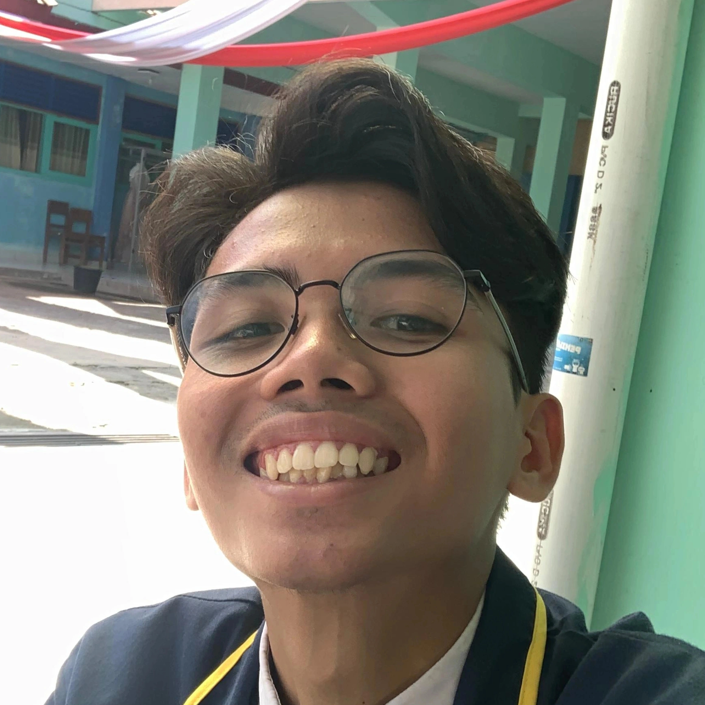

Halaman profil mahasiswa sederhana yang dibangun menggunakan HTML dan CSS murni.

Saya adalah mahasiswa yang berfokus pada manajemen informasi, penyiaran media, serta pembuatan konten digital seperti motion graphics dan pengembangan situs web sederhana.
Mahasiswa Aktif STMM Yogyakarta!